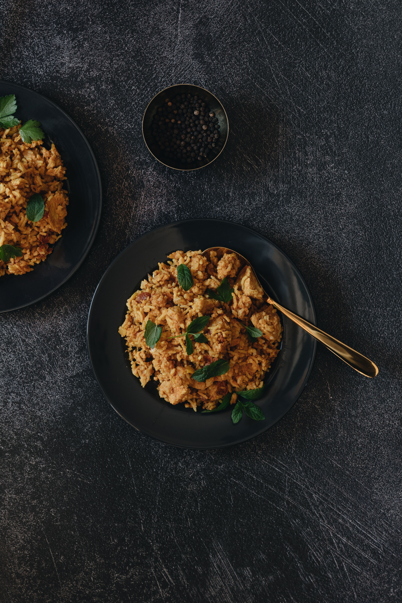

🍗 Chicken Biryani Recipe

⏱️ 60 min
🍽️ 4 Servings
📊 Medium
Ingredients
- Chicken
- Basmati Rice
- Onion
- Tomato
- Yogurt
- Ginger-Garlic Paste
- Biryani Masala
- Green Chilli
- Fresh Coriander
- Cooking Oil
Cooking Steps
- Wash and soak the basmati rice.
- Marinate the chicken with yogurt and spices.
- Cook the marinated chicken with onion, tomato and spices.
- Cook the rice until it is partially done.
- Layer the rice over the chicken mixture.
- Cover and cook on low heat until the rice is fully cooked.
- Garnish with fresh coriander and serve hot.